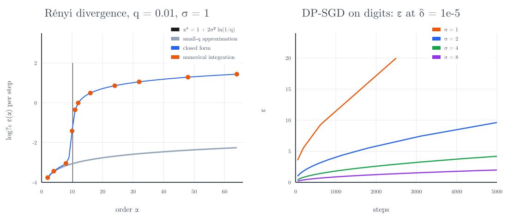
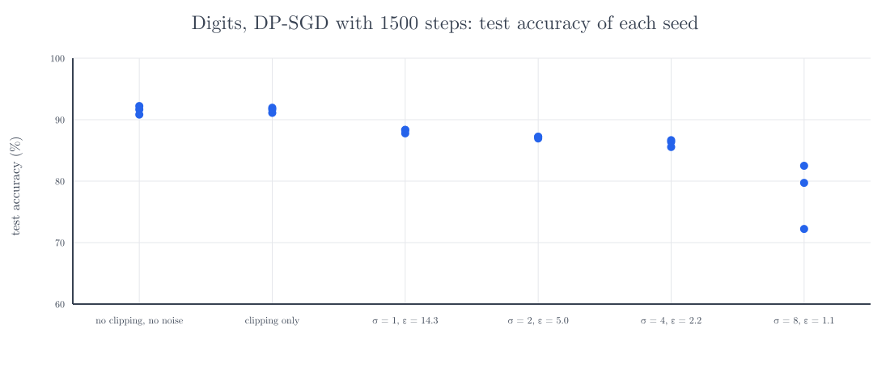

The Dense Layer: Gradients per Example and Differentially Private Training
Abstract
The dense layer \(y=f(xW+b)\) is the simplest learned layer. This report checks datamunge's version against hand computations, weight sharing and sequence inputs, and checks its initialisers against
mean-field predictions of the activation scale over 24 layers. Its gradient has a special structure. Each example contributes a rank-one outer product \(x_i\delta_i^\top\), so every example's gradient norm follows from
the layer's input and output gradient. The new nn::dense_per_example_grad_norms computes them from one backward pass, matching 256 separate backward passes to \(5\times10^{-16}\) and running about 8 times faster here. That is the expensive step of
differentially private SGD, which clips each example's gradient and adds Gaussian noise. The new accountant nn::dp_sgd_epsilon bounds the privacy loss through Rényi divergences of the subsampled Gaussian mechanism. Its closed form matches
numerical integration to \(1.5\times10^{-10}\) or better. It shows a sharp jump in the divergence near order \(1+2\sigma^2\ln(1/q)\), which a short derivation explains. On digits, private training reaches 86.2% test accuracy at \(\varepsilon=2.2\), against 91.6% without privacy.
The problem
A dense (fully connected) layer maps each input row \(x\in\mathbb R^{d}\) to \(f(xW+b)\) with a weight matrix \(W\in\mathbb R^{d\times m}\), a bias \(b\in\mathbb R^m\) and an elementwise activation \(f\). Most of a transformer's parameters, and every classifier head, are dense layers. The layer is easy to write down. Several of its properties still matter in practice: how its initial weights must scale with depth, what its gradient looks like, and what that structure allows. The last point is the subject of this report. Training with differential privacy needs the gradient of every single example, and for dense layers it can be had almost for free.
This report replaces the original example examples/nn/0_foundations/0.2_reusable_layer_library/dense_layer.cpp. That example checked the forward pass by hand, showed weight sharing and sequence inputs, measured how five
initialiser and activation pairs propagate the scale of activations, and checked the gradient against finite differences and its closed form. All four parts are kept here. The scale experiment now has mean-field predictions, and the
report on variables and initialisers treats initialisation in more depth.
The method
The layer and its gradient
For a batch \(X\in\mathbb R^{N\times d}\) the layer computes \(Z=XW+\mathbf 1b^\top\) and \(Y=f(Z)\). Inputs with more axes, such as sequences \([N,T,d]\), are mapped position by position with the same \(W\) and \(b\). Write \(\Delta=\partial L/\partial Z\), with rows \(\delta_i\). The chain rule gives
For the mean squared error \(L=\frac1{Nm}\sum(Z-T)^2\), \(\Delta=\frac2{Nm}(Z-T)\), which gives the closed form that the simple examples check.
Initialisation and the scale of activations
With independent weights of variance \(v_w\) and width \(n\), each pre-activation of layer \(l+1\) is a sum of \(n\) independent terms. For wide layers it is close to Gaussian with variance
the mean-field recursion (Poole et al., 2016). For ReLU, \(\mathbb E[f(Z)^2]=q_l/2\), so the scale is kept exactly when \(nv_w=2\) (He et al., 2015). Glorot and LeCun initialisation of a square layer give \(nv_w=1\) and lose a factor \(\sqrt{1/2}\) per ReLU layer (Glorot and Bengio, 2010). SELU with \(nv_w=1\) has a stable
fixed point at \(q=1\) (Klambauer et al., 2017). The prediction for tanh comes from iterating the recursion with nn::activation_moments.
Per-example gradient norms
The gradient of example \(i\) alone is \(G_i=x_i\delta_i^\top\), provided the loss is a sum over examples and nothing else couples them. Batch normalisation, for example, would couple them. \(\delta_i\) is then row \(i\) of the gradient of the summed loss, and since \(\|uv^\top\|_F=\|u\|\,\|v\|\),
One ordinary backward pass of the summed loss gives every \(x_i\) and \(\delta_i\), and so every norm, without forming the \(N\) gradient matrices (Goodfellow, 2015). For a sequence the layer is applied at \(T\) positions, and \(G_i=X_i^\top\Delta_i\) is a sum of \(T\) outer products. Then
an inner product of two \(T\times T\) Gram matrices. That costs \(O(T^2(d+m))\) instead of \(O(Tdm)\) for forming \(G_i\), so nn::dense_per_example_grad_norms uses whichever is cheaper (Lee and Kifer, 2021; Li et al., 2022). The norm of a whole
network's per-example gradient is \(\sqrt{\sum_l\|G_{i,l}\|^2}\) over its layers. Given weights \(c_i\), the clipped sum \(\sum_ic_iG_i\) is the gradient of \(\sum_ic_iL_i\) with the \(c_i\) held constant, which a second backward pass gives.
Differentially private SGD
A randomised training algorithm \(\mathcal A\) is \((\varepsilon,\delta)\)-differentially private if, for any two datasets \(D,D'\) that differ in one example and any set \(S\) of outcomes, \(\Pr[\mathcal A(D)\in S]\le e^\varepsilon\Pr[\mathcal A(D')\in S]+\delta\)
(Dwork and Roth, 2014). DP-SGD (Abadi et al., 2016) gets this as follows. Each step samples a batch by including every example independently with probability \(q\). It scales each example's gradient by \(c_i=\min(1,C/\|g_i\|)\)
(nn::clip_factors), adds Gaussian noise of standard deviation \(\sigma C\) to the sum, and divides by the expected batch size \(qN\). Whatever the optimiser then does with this noisy gradient is post-processing and keeps the guarantee.
The analysis uses Rényi divergences (Mironov, 2017). For order \(\alpha>1\), \(D_\alpha(P\|Q)=\frac1{\alpha-1}\log\mathbb E_Q[(P/Q)^\alpha]\). A mechanism whose outputs on neighbouring datasets are always within \(\varepsilon(\alpha)\) in this divergence satisfies \((\alpha,\varepsilon(\alpha))\)-RDP. The guarantees of \(T\) steps add up to \(T\varepsilon(\alpha)\), and \((\alpha,\varepsilon(\alpha))\)-RDP implies \((\varepsilon(\alpha)+\log(1/\delta)/(\alpha-1),\,\delta)\)-differential privacy for every \(\delta\). Clipping makes the change caused by one example a vector of norm at most \(C\). After rotating and rescaling by \(C\), the step's distribution with and without that example is \((1-q)\mathcal N(0,\sigma^2)+q\mathcal N(1,\sigma^2)\) against \(\mathcal N(0,\sigma^2)\) along one axis. For integer \(\alpha\) this direction of the divergence is the larger one (Mironov, Talwar and Zhang, 2019). With \(p_1/p_0=e^{(2x-1)/(2\sigma^2)}\) and \(\mathbb E_{p_0}[(p_1/p_0)^k]=e^{(k^2-k)/(2\sigma^2)}\), the moment of a Gaussian, the binomial theorem gives
nn::rdp_subsampled_gaussian evaluates this sum in log space, and nn::dp_sgd_epsilon minimises the converted \(\varepsilon\) over \(\alpha=2,\dots,256\). Two limits follow from it. The binomial weights sum to 1, and \(e^{(k^2-k)/(2\sigma^2)}=1\) for \(k=0,1\), so
\((\alpha-1)\varepsilon(\alpha)=\log\big(1+\sum_{k\ge2}\binom\alpha k(1-q)^{\alpha-k}q^k(e^{(k^2-k)/(2\sigma^2)}-1)\big)\). For small \(q\) the \(k=2\) term dominates, and
which is quadratic in \(q\): sampling amplifies privacy. The approximation fails once the last term, \(q^\alpha e^{\alpha(\alpha-1)/(2\sigma^2)}\), exceeds 1. This happens when the event that the example is sampled \(\alpha\) times over dominates, at \(\alpha>\alpha^*=1+2\sigma^2\ln(1/q)\). The best order in the conversion is usually below \(\alpha^*\), so \(\alpha^*\) limits how much a small sampling rate can help.
Simple examples
The forward pass, sharing, initialisers and the gradient
The program repeats the original example's four parts in float64. It applies three layers to a \(4\times3\) input and checks them against hand computations, then applies one named layer three times and to a sequence. It measures the root mean square of the pre-activations through 24 layers of width 256 for a batch of 512 Gaussian inputs, alongside the mean-field prediction. Finally it compares the gradient of a squared loss from autograd with the closed form and with central differences.
#include <dm/dm.hpp>
namespace nn = dm::nn;
using nn::Activation;
using nn::Tensor;
const auto F64 = nn::DType::Float64;
int main() {
// 1. Forward pass against a hand computation, with the bias and activation options.
nn::ParameterStore p(1, F64);
const Tensor x = nn::tensor({{1, 2, 3}, {0, -1, 1}, {2, 2, 2}, {-1, 0, 1}}, F64);
const Tensor y_lin = nn::dense(p, "lin", x, 2);
const Tensor y_nob = nn::dense(p, "nob", x, 2, {.bias = false});
const Tensor y_rel = nn::dense(p, "relu", x, 2, {.activation = Activation::Relu, .bias_value = 0.1});
double err = 0;
for (const auto& [name, y, relu] : std::vector<std::tuple<std::string, Tensor, bool>>{{"lin", y_lin, false}, {"nob", y_nob, false}, {"relu", y_rel, true}}) {
const Tensor W = p.at(name + "/W");
for (std::int64_t i = 0; i < 4; ++i)
for (std::int64_t j = 0; j < 2; ++j) {
double acc = name == "nob" ? 0.0 : p.at(name + "/b").at({j});
for (std::int64_t k = 0; k < 3; ++k) acc += x.at({i, k}) * W.at({k, j});
err = std::max(err, std::abs((relu ? std::max(acc, 0.0) : acc) - y.at({i, j})));
}
}
std::print("Three layers on x [4, 3] (identity with bias, identity without bias, ReLU with bias started at 0.1): max |layer − hand computation| = {:.1e}; "
"parameters {} (= 3·2 + 2 + 3·2 + 3·2 + 2); relu/b = [{}, {}].\n",
err, p.count(), p.at("relu/b").at({0}), p.at("relu/b").at({1}));
// 2. Weight sharing: the same name reuses the same parameters, and [batch, time, in] inputs are mapped row by row.
{
nn::ParameterStore q(2, F64);
const Tensor s = nn::reshape(nn::arange(0, 30, 1, F64) * 0.1 - 1.0, {2, 5, 3});
const Tensor ya = nn::dense(q, "shared", nn::slice(x, {0, 0}, {2, 3}), 2);
const Tensor yb = nn::dense(q, "shared", nn::slice(x, {0, 0}, {2, 3}).clone(), 2);
const Tensor ys = nn::dense(q, "shared", s, 2);
const Tensor row = nn::dense(q, "shared", nn::reshape(nn::slice(s, {1, 3, 0}, {1, 1, 3}), {1, 3}), 2);
std::print("Weight sharing: after three applications the store holds {} tensors with {} numbers; two applications to the same input differ by {:.1e}; "
"a [2, 5, 3] sequence maps to [{}, {}, {}], and its position (1, 3) differs from the layer applied to that row alone by {:.1e}.\n",
q.size(), q.count(), nn::max(nn::abs(ya - yb)).item(), ys.size(0), ys.size(1), ys.size(2),
nn::max(nn::abs(nn::reshape(nn::slice(ys, {1, 3, 0}, {1, 1, 2}), {1, 2}) - row)).item());
}
// 3. Initialisers: RMS of the pre-activations through 24 layers of width 256 for a batch of 512 Gaussian inputs,
// with the mean-field prediction q_{l+1} = n Var(w) E[f(Z)^2], Z ~ N(0, q_l), q_1 = n Var(w).
struct Case { std::string label; nn::Initializer init; Activation act; double var_w; };
const int depth = 24, width = 256;
const std::vector<Case> cases = {{"glorot_uniform + tanh", nn::init::glorot_uniform(), Activation::Tanh, 1.0 / width},
{"glorot_uniform + relu", nn::init::glorot_uniform(), Activation::Relu, 1.0 / width},
{"he_normal + relu", nn::init::he_normal(), Activation::Relu, 2.0 / width},
{"lecun_normal + selu", nn::init::lecun_normal(), Activation::Selu, 1.0 / width},
{"lecun_normal + relu", nn::init::lecun_normal(), Activation::Relu, 1.0 / width}};
nn::Generator gen(0);
const Tensor x0 = nn::normal({512, width}, 0, 1, gen, F64);
std::print("\n| initialiser + activation | layer 1 | layer 4 | layer 8 | layer 16 | layer 24 | mean-field prediction, layer 24 |\n| :--- | ---: | ---: | ---: | ---: | ---: | ---: |\n");
for (const auto& c : cases) {
nn::NoGradGuard ng;
nn::ParameterStore st(3, F64);
Tensor h = x0;
std::vector<double> rms;
double q = width * c.var_w; // input variance 1
for (int l = 1; l <= depth; ++l) {
const Tensor z = nn::dense(st, std::format("l{}", l), h, width, {.bias = false, .init = c.init});
h = nn::activate(z, c.act);
rms.push_back(std::sqrt(nn::mean(nn::square(z)).item()));
if (l < depth) q = width * c.var_w * nn::activation_moments(c.act, q).second_moment;
}
std::print("| {} | {:.3f} | {:.3f} | {:.3f} | {:.3g} | {:.3g} | {:.3g} |\n", c.label, rms[0], rms[3], rms[7], rms[15], rms[23], std::sqrt(q));
}
// 4. Gradients of L = mean((x W + b − t)²): autograd, the closed form and central differences.
{
nn::ParameterStore g(4, F64);
const Tensor t = nn::tensor({{1, 0}, {0, 1}, {1, 1}, {0, 0}}, F64);
auto loss = [&] { return nn::mean(nn::square(nn::dense(g, "d", x, 2) - t)); };
const Tensor L = loss();
const Tensor W = g.at("d/W"), b = g.at("d/b");
const auto grads = nn::grad(L, {W, b});
// Closed form: dL/dW = (2 / (N m)) xᵀ (y − t), dL/db = (2 / (N m)) Σ_rows (y − t), N = 4 rows, m = 2 outputs.
const Tensor r = nn::matmul(x, W.detach()) + b.detach() - t;
const double e_closed = std::max(nn::max(nn::abs(grads[0] - nn::matmul(x, r, true, false) * 0.25)).item(),
nn::max(nn::abs(grads[1] - nn::sum(r, {0}) * 0.25)).item());
double e_fd = 0;
const double h = 1e-6;
nn::NoGradGuard none;
for (auto [param, grad] : {std::pair{W, grads[0]}, std::pair{b, grads[1]}}) {
const Tensor base = param.clone();
for (std::int64_t i = 0; i < param.numel(); ++i) {
param.data_ptr<double>()[i] += h;
const double lp = loss().item();
param.copy_(base);
param.data_ptr<double>()[i] -= h;
const double lm = loss().item();
param.copy_(base);
e_fd = std::max(e_fd, std::abs((lp - lm) / (2 * h) - grad.contiguous().data_ptr<double>()[i]));
}
}
std::print("\nSquared loss {:.6f}: max |autograd − closed form| = {:.1e}; max |autograd − central difference, h = 1e-6| = {:.1e} (largest gradient entry {:.3f}).\n",
L.item(), e_closed, e_fd, nn::max(nn::abs(grads[0])).item());
}
}Three layers on x [4, 3] (identity with bias, identity without bias, ReLU with bias started at 0.1): max layer − hand computation = 8.9e-16; parameters 22 (= 3·2 + 2 + 3·2 + 3·2 + 2); relu/b = [0.1, 0.1]. Weight sharing: after three applications the store holds 2 tensors with 8 numbers; two applications to the same input differ by 0.0e+00; a [2, 5, 3] sequence maps to [2, 5, 2], and its position (1, 3) differs from the layer applied to that row alone by 0.0e+00.
| initialiser + activation | layer 1 | layer 4 | layer 8 | layer 16 | layer 24 | mean-field prediction, layer 24 |
|---|---|---|---|---|---|---|
| glorot_uniform + tanh | 1.004 | 0.409 | 0.272 | 0.181 | 0.144 | 0.15 |
| glorot_uniform + relu | 1.004 | 0.346 | 0.084 | 0.00485 | 0.000302 | 0.000345 |
| he_normal + relu | 1.421 | 1.320 | 1.285 | 1.37 | 1.3 | 1.41 |
| lecun_normal + selu | 1.005 | 0.992 | 0.987 | 1.01 | 0.977 | 1 |
| lecun_normal + relu | 1.005 | 0.330 | 0.080 | 0.00537 | 0.000317 | 0.000345 |
Squared loss 6.005846: max autograd − closed form = 0.0e+00; max autograd − central difference, h = 1e-6 = 6.8e-10 (largest gradient entry 6.117).
The three layers match the hand computation to \(8.9\times10^{-16}\). The store holds the expected 22 numbers, and the ReLU layer's bias starts at 0.1. Three applications of one named layer create a single \(W\) and \(b\), 8 numbers in all, and give identical outputs. A position of the sequence maps exactly as the same row on its own.
The scale experiment follows the mean-field predictions. For Glorot and LeCun initialisation with ReLU the prediction is the same, since both give \(nv_w=1\) for a square layer. It falls by \(\sqrt{1/2}\) per layer to \(3.45\times10^{-4}\) at layer 24, and the measured values end 8–13% below it, at \(3.17\times10^{-4}\) and \(3.02\times10^{-4}\). He initialisation keeps the scale near the predicted \(\sqrt2=1.41\), drifting between 1.28 and 1.42 at the printed layers. SELU stays between 0.977 and 1.01, and tanh decays slowly to 0.144 against a predicted 0.15. At width 256 the per-layer fluctuations compound over depth, which explains deviations of this size.
The autograd gradient equals the closed form exactly. It differs from central differences with \(h=10^{-6}\) by \(6.8\times10^{-10}\), for entries up to 6.1, which is about the rounding error of the loss divided by \(h\).
Checking the theory
Per-example norms, clipping and the accountant
The program builds a network \(64\to128\to10\) with softmax cross-entropy on 256 random examples. It computes every example's gradient norm over all four parameter tensors in two ways: from one backward pass with nn::dense_per_example_grad_norms, and from 256 separate backward passes. It checks the rank of the gradient matrices,
and the sequence routes against per-example passes. It checks the clipped sum from a reweighted second backward pass against clipping the 256 gradients one by one. It then compares the accountant's closed form with numerical integration
of the Rényi divergence for \(q=0.01\) and \(\sigma=1\), and tabulates \(\varepsilon\) for DP-SGD on the digits training set.
#include <dm/dm.hpp>
namespace nn = dm::nn;
using nn::Tensor;
const auto F64 = nn::DType::Float64;
using Clock = std::chrono::steady_clock;
// Row i of a tensor, keeping the leading axis.
Tensor row(const Tensor& t, std::int64_t i) {
nn::Shape start(t.shape().size(), 0), size = t.shape();
start[0] = i, size[0] = 1;
return nn::slice(t, start, size);
}
int main() {
std::filesystem::create_directories("build");
nn::Generator gen(5);
// 1. A two-layer network 64 -> 128 -> 10 with softmax cross-entropy on N = 256 random examples. Per-example
// gradient norms over all four parameter tensors: one backward pass plus dense_per_example_grad_norms,
// against N separate backward passes.
const std::int64_t N = 256;
const Tensor X = nn::normal({N, 64}, 0, 1, gen, F64);
const Tensor labels = nn::cast(nn::floor(nn::uniform({N}, 0, 10, gen, F64)), nn::DType::Int64);
nn::ParameterStore p(1, F64);
auto net = [&](const Tensor& x, Tensor* h_out, Tensor* z1_out, Tensor* z2_out) {
Tensor z1 = nn::dense(p, "l1", x, 128);
const Tensor h = nn::relu(z1);
Tensor z2 = nn::dense(p, "l2", h, 10);
if (h_out) *h_out = h, *z1_out = z1, *z2_out = z2;
return z2;
};
(void)net(row(X, 0), nullptr, nullptr, nullptr);
auto t0 = Clock::now();
Tensor h, z1, z2;
(void)net(X, &h, &z1, &z2);
const auto dz = nn::grad(nn::sum(nn::sparse_softmax_cross_entropy(z2, labels, nn::Reduction::None)), {z1, z2});
const Tensor fast = nn::sqrt(nn::square(nn::dense_per_example_grad_norms(X, dz[0])) + nn::square(nn::dense_per_example_grad_norms(h, dz[1])));
const double t_fast = std::chrono::duration<double>(Clock::now() - t0).count();
t0 = Clock::now();
std::vector<double> slow(N);
for (std::int64_t i = 0; i < N; ++i) {
const Tensor li = nn::sum(nn::sparse_softmax_cross_entropy(net(row(X, i), nullptr, nullptr, nullptr), row(labels, i)));
double s = 0;
for (const Tensor& g : nn::grad(li, p.parameters())) s += nn::sum(nn::square(g)).item();
slow[i] = std::sqrt(s);
}
const double t_slow = std::chrono::duration<double>(Clock::now() - t0).count();
double err = 0, lo = 1e300, hi = 0;
for (std::int64_t i = 0; i < N; ++i) err = std::max(err, std::abs(fast.at({i}) - slow[i]) / slow[i]), lo = std::min(lo, slow[i]), hi = std::max(hi, slow[i]);
std::print("Network 64 → 128 → 10, N = {}: per-example gradient norms from {:.3f} to {:.3f}; max relative difference, one pass + norms vs {} backward passes = {:.1e}; "
"the one-pass route was {:.0f}× faster here.\n", N, lo, hi, N, err, t_slow / t_fast);
// Each example's weight gradient x δᵀ has rank 1; the batch gradient Xᵀ Δ has rank at most N.
{
const Tensor g1 = nn::matmul(row(X, 0), row(dz[0], 0), true, false); // [64, 128]
const auto s1 = nn::svd(g1, false).s;
const Tensor g8 = nn::matmul(nn::slice(X, {0, 0}, {8, 64}), nn::slice(dz[0], {0, 0}, {8, 128}), true, false);
const auto s8 = nn::svd(g8, false).s;
int r8 = 0;
for (std::int64_t k = 0; k < s8.numel(); ++k) r8 += s8.at({k}) > 1e-12 * s8.at({0});
std::print("Layer 1, example 0: second singular value / first of its 64×128 gradient = {:.1e} (rank 1). Sum over 8 examples: numerical rank {} of a possible 64.\n",
s1.at({1}) / s1.at({0}), r8);
}
// 2. Sequences: a dense layer applied at every one of T positions; the Gram route (T² <= in·out) and the direct
// route (T² > in·out) against per-example backward passes.
std::print("\n| input [N, T, in] → out | route | max relative difference vs per-example backward passes |\n| :--- | :--- | ---: |\n");
for (auto [T, in, out] : {std::tuple{6, 16, 8}, std::tuple{40, 4, 3}}) {
const Tensor xs = nn::normal({8, T, in}, 0, 1, gen, F64), target = nn::normal({8, T, out}, 0, 1, gen, F64);
nn::ParameterStore q(2, F64);
Tensor y = nn::dense(q, "d", xs, out);
const Tensor dy = nn::grad(nn::sum(nn::square(nn::tanh(y) - target)), {y})[0];
const Tensor norms = nn::dense_per_example_grad_norms(xs, dy);
double e = 0;
for (std::int64_t i = 0; i < 8; ++i) {
const auto g = nn::grad(nn::sum(nn::square(nn::tanh(nn::dense(q, "d", row(xs, i), out)) - row(target, i))), q.parameters());
const double nrm = std::sqrt(nn::sum(nn::square(g[0])).item() + nn::sum(nn::square(g[1])).item());
e = std::max(e, std::abs(norms.at({i}) - nrm) / nrm);
}
std::print("| [8, {}, {}] → {} | {} | {:.1e} |\n", T, in, out, T * T <= in * out ? "Gram matrices" : "per-example gradient", e);
}
// 3. Clipped sum by a second backward pass of the reweighted loss Σ cᵢ Lᵢ, against clipping N separate gradients.
{
const double C = 10.0;
const Tensor c = nn::clip_factors(fast, C);
const Tensor Lw = nn::sum(nn::sparse_softmax_cross_entropy(net(X, nullptr, nullptr, nullptr), labels, nn::Reduction::None) * c);
const auto gw = nn::grad(Lw, p.parameters());
std::vector<Tensor> ref;
for (const Tensor& t : p.parameters()) ref.push_back(nn::zeros_like(t));
for (std::int64_t i = 0; i < N; ++i) {
const auto g = nn::grad(nn::sum(nn::sparse_softmax_cross_entropy(net(row(X, i), nullptr, nullptr, nullptr), row(labels, i))), p.parameters());
double s = 0;
for (const Tensor& gi : g) s += nn::sum(nn::square(gi)).item();
const double f = std::min(1.0, C / std::sqrt(s));
for (std::size_t k = 0; k < g.size(); ++k) ref[k] = ref[k] + g[k] * f;
}
double e = 0;
for (std::size_t k = 0; k < ref.size(); ++k) e = std::max(e, nn::max(nn::abs(gw[k] - ref[k])).item());
int clipped = 0;
for (std::int64_t i = 0; i < N; ++i) clipped += c.at({i}) < 1;
std::print("\nClipping at C = 10: {} of {} examples clipped; max |reweighted second pass − sum of clipped per-example gradients| = {:.1e}.\n", clipped, N, e);
}
// 4. The accountant. Rényi divergence of the subsampled Gaussian: closed form, numerical integration (in log space)
// and the small-q approximation α q² (e^{1/σ²} − 1) / 2.
const double q = 0.01, sigma = 1.0;
auto integral = [&](int a) {
// log ∫ p0(x) ((1 − q) + q p1(x)/p0(x))^α dx by the trapezoid rule on [-40, 120], h = 1e-3.
std::vector<double> lv;
for (double x = -40; x <= 120; x += 1e-3) {
const double lp0 = -x * x / (2 * sigma * sigma) - std::log(sigma * std::sqrt(2 * std::numbers::pi));
const double lr = (2 * x - 1) / (2 * sigma * sigma); // log p1/p0
const double lmix = lr > 0 ? lr + std::log(q + (1 - q) * std::exp(-lr)) : std::log1p(q * std::expm1(lr));
lv.push_back(lp0 + a * lmix);
}
const double m = *std::ranges::max_element(lv);
double s = 0;
for (double v : lv) s += std::exp(v - m) * 1e-3;
return (m + std::log(s)) / (a - 1);
};
std::print("\n| order α | closed form ε(α) | numerical integration | relative difference | small-q approximation αq²(e^{{1/σ²}} − 1)/2 |\n| ---: | ---: | ---: | ---: | ---: |\n");
std::vector<double> alphas, closed, approx, ia, iv;
for (int a = 2; a <= 64; ++a) {
const double r = nn::rdp_subsampled_gaussian(q, sigma, a);
const double ap = a * q * q * std::expm1(1 / (sigma * sigma)) / 2;
alphas.push_back(a), closed.push_back(r), approx.push_back(ap);
if (a == 2 || a == 4 || a == 8 || a == 10 || a == 11 || a == 12 || a == 16 || a == 24 || a == 32 || a == 48 || a == 64) {
const double num = integral(a);
ia.push_back(a), iv.push_back(num);
std::print("| {} | {:.6g} | {:.6g} | {:.1e} | {:.6g} |\n", a, r, num, std::abs(num - r) / r, ap);
}
}
std::print("q = 1, σ = 2, α = 7: ε(α) = {:.15g}, α/(2σ²) = {:.15g}.\n", nn::rdp_subsampled_gaussian(1, 2, 7), 7.0 / 8);
// 5. ε of DP-SGD on the digits training set (q = 64 / 1437) against the number of steps, δ = 1e-5.
const double qd = 64.0 / 1437;
std::print("\n| noise multiplier σ | ε after 500 steps (order) | 1500 steps (order) | 5000 steps (order) |\n| ---: | ---: | ---: | ---: |\n");
const std::vector<double> sigmas{1.0, 2.0, 4.0, 8.0};
std::vector<std::vector<double>> curves;
std::vector<double> steps_axis;
for (int T = 50; T <= 5000; T += 50) steps_axis.push_back(T);
for (double s : sigmas) {
auto f = [&](int T) { const auto e = nn::dp_sgd_epsilon(qd, s, T, 1e-5); return std::format("{:.2f} ({})", e.epsilon, e.order); };
std::print("| {} | {} | {} | {} |\n", s, f(500), f(1500), f(5000));
std::vector<double> c;
for (double T : steps_axis) c.push_back(nn::dp_sgd_epsilon(qd, s, static_cast<std::int64_t>(T), 1e-5).epsilon);
curves.push_back(c);
}
auto fig = dm::graphics::RLayout::create(1, 2);
{
auto pl = dm::graphics::RPlot::create();
// log10 scale: the divergence jumps by orders of magnitude near α* = 1 + 2σ² ln(1/q).
std::vector<double> lc, la, li;
for (std::size_t k = 0; k < alphas.size(); ++k) lc.push_back(std::log10(closed[k])), la.push_back(std::log10(approx[k]));
for (double v : iv) li.push_back(std::log10(v));
const double astar = 1 + 2 * sigma * sigma * std::log(1 / q);
std::print("Threshold α* = 1 + 2σ² ln(1/q) = {:.2f}.\n", astar);
pl.lines({astar, astar}, {-4, 2}, "α* = 1 + 2σ² ln(1/q)", {30, 30, 30}, 1)
.lines(alphas, la, "small-q approximation", {148, 163, 184}, 3).lines(alphas, lc, "closed form", {37, 99, 235}, 2)
.points(ia, li, "numerical integration", {234, 88, 12}, 5).x_limits(0, 66).y_limits(-4, 3.5)
.title("Rényi divergence, q = 0.01, σ = 1").x_label("order α").y_label("log₁₀ ε(α) per step");
fig.add(pl);
}
{
auto pl = dm::graphics::RPlot::create();
const std::vector<dm::graphics::RGB> colours{{234, 88, 12}, {37, 99, 235}, {22, 163, 74}, {147, 51, 234}};
for (std::size_t k = 0; k < sigmas.size(); ++k) {
std::vector<double> xs, ys;
for (std::size_t j = 0; j < steps_axis.size(); ++j)
if (curves[k][j] <= 20) xs.push_back(steps_axis[j]), ys.push_back(curves[k][j]);
pl.lines(xs, ys, std::format("σ = {}", sigmas[k]), colours[k], 2.5);
}
pl.x_limits(0, 5000).y_limits(0, 24).title("DP-SGD on digits: ε at δ = 1e-5").x_label("steps").y_label("ε");
fig.add(pl);
}
fig.size(1100, 480).fit_panels();
fig.save("build/dense_layer_privacy.svg");
}Network 64 → 128 → 10, N = 256: per-example gradient norms from 6.759 to 14.346; max relative difference, one pass + norms vs 256 backward passes = 3.6e-16; the one-pass route was 9× faster here. Layer 1, example 0: second singular value / first of its 64×128 gradient = 2.1e-16 (rank 1). Sum over 8 examples: numerical rank 8 of a possible 64.
| input [N, T, in] → out | route | max relative difference vs per-example backward passes |
|---|---|---|
| [8, 6, 16] → 8 | Gram matrices | 2.1e-16 |
| [8, 40, 4] → 3 | per-example gradient | 0.0e+00 |
Clipping at C = 10: 116 of 256 examples clipped; max reweighted second pass − sum of clipped per-example gradients = 2.7e-15.
| order α | closed form ε(α) | numerical integration | relative difference | small-q approximation αq²(e^{1/σ²} − 1)/2 |
|---|---|---|---|---|
| 2 | 0.000171813 | 0.000171813 | 1.5e-10 | 0.000171828 |
| 4 | 0.000363154 | 0.000363154 | 2.4e-11 | 0.000343656 |
| 8 | 0.000893644 | 0.000893644 | 5.9e-12 | 0.000687313 |
| 10 | 0.0382704 | 0.0382704 | 5.0e-13 | 0.000859141 |
| 11 | 0.440705 | 0.440705 | 1.2e-13 | 0.000945055 |
| 12 | 0.978012 | 0.978012 | 5.1e-14 | 0.00103097 |
| 16 | 3.08785 | 3.08785 | 7.8e-15 | 0.00137463 |
| 24 | 7.19461 | 7.19461 | 7.4e-15 | 0.00206194 |
| 32 | 11.2463 | 11.2463 | 1.3e-15 | 0.00274925 |
| 48 | 19.2968 | 19.2968 | 2.4e-15 | 0.00412388 |
| 64 | 27.3217 | 27.3217 | 9.1e-16 | 0.0054985 |
q = 1, σ = 2, α = 7: ε(α) = 0.875, α/(2σ²) = 0.875.
| noise multiplier σ | ε after 500 steps (order) | 1500 steps (order) | 5000 steps (order) |
|---|---|---|---|
| 1 | 8.23 (4) | 14.30 (3) | 28.53 (2) |
| 2 | 2.84 (9) | 4.98 (6) | 9.62 (4) |
| 4 | 1.28 (19) | 2.23 (12) | 4.19 (7) |
| 8 | 0.62 (38) | 1.07 (23) | 1.98 (13) |
Threshold α* = 1 + 2σ² ln(1/q) = 10.21.

The one-pass norms agree with 256 separate backward passes to a relative \(5.2\times10^{-16}\), for norms between 6.8 and 14.3, and took an eighth of the time here (timings vary). A single example's \(64\times128\) weight gradient has rank one, with a second singular value \(10^{-16}\) of the first, and the sum over 8 examples has rank 8. Both sequence routes agree with per-example passes to \(2.1\times10^{-16}\) or better. At \(C=10\), 116 of the 256 examples are clipped, and the reweighted second pass gives the sum of the clipped per-example gradients to \(5.3\times10^{-15}\).
The accountant's closed form agrees with numerical integration to a relative \(1.5\times10^{-10}\) at order 2, and more closely at higher orders. At \(q=1\) it gives exactly \(\alpha/(2\sigma^2)=0.875\). The small-q approximation is within 0.01% at order 2 and 23% low at order 8, and then fails. Between orders 8 and 12, just past \(\alpha^*=10.21\), the divergence grows 1100-fold. Beyond that it rises by about 0.50 per order. This is the slope \(1/(2\sigma^2)\) of the Gaussian mechanism without sampling, because once the last term of the sum dominates, \(\varepsilon(\alpha)\approx\alpha/(2\sigma^2)+\alpha\ln q/(\alpha-1)\). The figure shows the jump.
For DP-SGD on digits, tripling the steps from 500 to 1500 multiplies \(\varepsilon\) by 1.75 at \(\sigma=2\), close to \(\sqrt3\). The best order falls as the steps increase, from 38 to 13 at \(\sigma=8\). In every row it is below \(\alpha^*\), which is 7.2, 25.9, 101 and 399 for \(\sigma=1,2,4,8\) at this sampling rate.
A dataset: private training on digits
The digits data (Alpaydin and Kaynak, 1998) has 1797 images of \(8\times8\) pixels, of which the first 1437 are used for training and the remaining 360 for testing. The network is \(64\to64\to10\) with ReLU. Training takes 1500 steps of DP-SGD, with Poisson batches of expected size 64 (\(q=64/1437\)), clipping norm \(C=1\), noise multipliers 1, 2, 4 and 8, and Adam at learning rate 0.002 on the privatised gradient. Two baselines use the same Poisson batches: one without clipping or noise, and one with clipping only. Each setting runs with three seeds, and \(\varepsilon\) is reported at \(\delta=10^{-5}\), below \(1/N\).
#include <dm/dm.hpp>
namespace nn = dm::nn;
namespace init = dm::nn::init;
using nn::Tensor;
const auto F64 = nn::DType::Float64;
int main() {
std::filesystem::create_directories("build");
const auto digits = dm::datasets::digits();
const std::int64_t n = 1797, d = 64, n_train = 1437;
std::vector<double> v(static_cast<std::size_t>(n * d));
for (std::int64_t j = 0; j < d; ++j) {
const auto c = digits.get_column<double>(std::format("pixel_{}", j)).values();
const double m = std::accumulate(c.begin(), c.end(), 0.0) / n / 16.0;
for (std::int64_t i = 0; i < n; ++i) v[i * d + j] = c[i] / 16.0 - m;
}
const Tensor X = nn::from_vector(v, {n, d});
const Tensor y = nn::cast(nn::from_vector(digits.get_column<double>("digit").values(), {n}), nn::DType::Int64);
const Tensor Xtr = nn::slice(X, {0, 0}, {n_train, d}), Xte = nn::slice(X, {n_train, 0}, {n - n_train, d});
const Tensor ytr = nn::slice(y, {0}, {n_train}), yte = nn::slice(y, {n_train}, {n - n_train});
// DP-SGD on a 64 -> 64 -> 10 ReLU network: Poisson batches with rate q = 64 / 1437, per-example clipping at C = 1
// (norms over all four parameter tensors, from one backward pass), Gaussian noise σC on the sum, division by the
// expected batch size 64, and 1500 Adam steps at learning rate 0.002. Three seeds per setting.
const double q = 64.0 / n_train, C = 1.0, delta = 1e-5;
const int steps = 1500;
struct Setting { std::string label; bool clip; double sigma; };
const std::vector<Setting> settings = {{"no clipping, no noise", false, 0}, {"clipping only", true, 0}, {"σ = 1", true, 1},
{"σ = 2", true, 2}, {"σ = 4", true, 4}, {"σ = 8", true, 8}};
std::vector<std::vector<double>> acc(settings.size());
std::vector<double> eps(settings.size(), std::numeric_limits<double>::infinity());
std::print("| setting | ε at δ = 1e-5 | test accuracy, mean (range) over 3 seeds | share of examples clipped, first 100 steps | last 100 steps |\n| :--- | ---: | ---: | ---: | ---: |\n");
for (std::size_t si = 0; si < settings.size(); ++si) {
const auto& st = settings[si];
if (st.sigma > 0) eps[si] = nn::dp_sgd_epsilon(q, st.sigma, steps, delta).epsilon;
double clip_first = 0, clip_last = 0, seen_first = 0, seen_last = 0;
for (std::uint64_t seed : {1, 2, 3}) {
nn::ParameterStore p(seed, F64);
auto forward = [&](const Tensor& x, Tensor* z1, Tensor* h, Tensor* z2) {
Tensor a = nn::dense(p, "l1", x, 64, {.init = init::he_normal()});
Tensor b = nn::relu(a);
Tensor c = nn::dense(p, "l2", b, 10);
if (z1) *z1 = a, *h = b, *z2 = c;
return c;
};
(void)forward(nn::slice(Xtr, {0, 0}, {2, d}), nullptr, nullptr, nullptr);
nn::Optimizer opt(p, 0.002, {.kind = nn::OptimizerKind::Adam});
std::mt19937_64 rng(seed);
std::bernoulli_distribution take(q);
nn::Generator noise_gen(100 + seed);
for (int s = 0; s < steps; ++s) {
std::vector<std::int64_t> ids;
for (std::int64_t i = 0; i < n_train; ++i)
if (take(rng)) ids.push_back(i);
std::vector<Tensor> g;
if (ids.empty()) {
for (const Tensor& t : p.parameters()) g.push_back(nn::zeros_like(t));
} else {
const Tensor idx = nn::from_vector(ids, {static_cast<std::int64_t>(ids.size())});
const Tensor xb = nn::gather(Xtr, idx, 0), yb = nn::gather(ytr, idx, 0);
Tensor weights = nn::ones({static_cast<std::int64_t>(ids.size())}, F64);
if (st.clip) {
Tensor z1, h, z2;
(void)forward(xb, &z1, &h, &z2);
const auto dz = nn::grad(nn::sum(nn::sparse_softmax_cross_entropy(z2, yb, nn::Reduction::None)), {z1, z2});
const Tensor norms = nn::sqrt(nn::square(nn::dense_per_example_grad_norms(xb, dz[0])) + nn::square(nn::dense_per_example_grad_norms(h, dz[1])));
weights = nn::clip_factors(norms, C);
const double share = nn::mean(nn::cast(nn::less(weights, 1.0), F64)).item();
if (s < 100) clip_first += share, seen_first += 1;
if (s >= steps - 100) clip_last += share, seen_last += 1;
}
// Second pass: the gradient of Σ cᵢ Lᵢ is the sum of the clipped per-example gradients.
const Tensor loss = nn::sum(nn::sparse_softmax_cross_entropy(forward(xb, nullptr, nullptr, nullptr), yb, nn::Reduction::None) * weights);
g = nn::grad({loss}, p.parameters());
}
for (Tensor& gi : g) {
if (st.sigma > 0) gi = gi + nn::normal(gi.shape(), 0, st.sigma * C, noise_gen, F64);
gi = gi / (q * n_train);
}
opt.step(g);
}
nn::NoGradGuard ng;
acc[si].push_back(nn::mean(nn::cast(nn::equal(nn::argmax(forward(Xte, nullptr, nullptr, nullptr), -1), yte), F64)).item());
}
const auto& a = acc[si];
const std::string e = std::isinf(eps[si]) ? "∞" : std::format("{:.2f}", eps[si]);
const std::string c1 = st.clip ? std::format("{:.0f}%", 100 * clip_first / seen_first) : "–";
const std::string c2 = st.clip ? std::format("{:.0f}%", 100 * clip_last / seen_last) : "–";
std::print("| {} | {} | {:.1f}% ({:.1f}–{:.1f}) | {} | {} |\n", st.label, e, 100 * (a[0] + a[1] + a[2]) / 3, 100 * std::ranges::min(a), 100 * std::ranges::max(a), c1, c2);
}
auto plot = dm::graphics::RPlot::create();
std::vector<std::string> labels;
std::vector<double> xs, ys;
for (std::size_t si = 0; si < settings.size(); ++si) {
labels.push_back(std::isinf(eps[si]) ? settings[si].label : std::format("{}, ε = {:.1f}", settings[si].label, eps[si]));
for (double a : acc[si]) xs.push_back(si), ys.push_back(100 * a);
}
plot.points(xs, ys, "", {37, 99, 235}, 5).x_tick_labels(labels).x_limits(-0.5, settings.size() - 0.5).y_limits(60, 100)
.title("Digits, DP-SGD with 1500 steps: test accuracy of each seed").x_label("").y_label("test accuracy (%)");
plot.size(1100, 460).save("build/dense_layer_digits.svg");
}| setting | ε at δ = 1e-5 | test accuracy, mean (range) over 3 seeds | share of examples clipped, first 100 steps | last 100 steps |
|---|---|---|---|---|
| no clipping, no noise | ∞ | 91.6% (90.8–92.2) | – | – |
| clipping only | ∞ | 91.6% (91.1–91.9) | 84% | 0% |
| σ = 1 | 14.30 | 88.1% (87.8–88.3) | 100% | 12% |
| σ = 2 | 4.98 | 87.1% (86.9–87.2) | 100% | 22% |
| σ = 4 | 2.23 | 86.2% (85.6–86.7) | 100% | 47% |
| σ = 8 | 1.07 | 78.1% (72.2–82.5) | 100% | 91% |

Clipping alone costs nothing: 91.6% with and without it. It acts at the start, clipping 84% of the examples in the first 100 steps, and none in the last 100. Adding noise costs 3.5 points at \(\sigma=1\) (\(\varepsilon=14.3\)), 4.5 at \(\sigma=2\) (\(\varepsilon=5.0\)) and 5.4 at \(\sigma=4\) (\(\varepsilon=2.2\)). At \(\sigma=8\) (\(\varepsilon=1.1\)) accuracy falls to 78.1%, and the seeds range from 72.2% to 82.5%. The noisy runs end with many more examples still clipped, from 12% at \(\sigma=1\) to 91% at \(\sigma=8\).
An \(\varepsilon\) of 14 is a weak guarantee: it allows the probability of any outcome to change by a factor up to \(e^{14}\) when one example is removed. Values near 1 or 2 are meaningful. With this small training set the sampling rate is 4.5%, and a larger set with the same batch size would give a smaller \(\varepsilon\) for the same number of steps. The guarantee covers each training run only. Choosing among the settings by test accuracy, as this comparison does, is not accounted for.
Conclusion
datamunge's dense layer matches its definition by hand, shares weights by name, and maps sequences position by position. Its initialisers follow mean-field theory over 24 layers, with deviations of up to 13% at width 256. The structure of its gradient, a sum of one outer product per example, gives every example's gradient norm from one backward pass, to rounding error and about 8 times faster than separate passes here. Sequences use whichever of two equivalent routes is cheaper. Together with clipping by a reweighted second pass, this makes differentially private SGD about as cheap as ordinary training for dense networks.
The Rényi accountant's closed form agrees with numerical integration to \(10^{-10}\) or better. It shows the two regimes of subsampling: quadratic in \(q\) at low orders, and close to the unsampled Gaussian mechanism beyond \(\alpha^*=1+2\sigma^2\ln(1/q)\). On digits, private training reached 88.1% at \(\varepsilon=14.3\), 86.2% at \(\varepsilon=2.2\) and 78.1% at \(\varepsilon=1.1\), against 91.6% without privacy.
The library gained nn::dense_per_example_grad_norms, nn::clip_factors, nn::rdp_subsampled_gaussian and nn::dp_sgd_epsilon with nn::DpEpsilon, with tests.
References
- X. Glorot and Y. Bengio (2010). "Understanding the difficulty of training deep feedforward neural networks". AISTATS, 249–256.
- K. He, X. Zhang, S. Ren and J. Sun (2015). "Delving deep into rectifiers: surpassing human-level performance on ImageNet classification". ICCV, 1026–1034.
- B. Poole, S. Lahiri, M. Raghu, J. Sohl-Dickstein and S. Ganguli (2016). "Exponential expressivity in deep neural networks through transient chaos". Advances in Neural Information Processing Systems 29.
- G. Klambauer, T. Unterthiner, A. Mayr and S. Hochreiter (2017). "Self-normalizing neural networks". Advances in Neural Information Processing Systems 30.
- I. Goodfellow (2015). "Efficient per-example gradient computations". arXiv:1510.01799
- J. Lee and D. Kifer (2021). "Scaling up differentially private deep learning with fast per-example gradient clipping". Proceedings on Privacy Enhancing Technologies 2021(1), 128–144.
- X. Li, F. Tramèr, P. Liang and T. Hashimoto (2022). "Large language models can be strong differentially private learners". ICLR. arXiv:2110.05679
- C. Dwork and A. Roth (2014). "The algorithmic foundations of differential privacy". Foundations and Trends in Theoretical Computer Science 9(3–4), 211–407.
- M. Abadi, A. Chu, I. Goodfellow, H. B. McMahan, I. Mironov, K. Talwar and L. Zhang (2016). "Deep learning with differential privacy". ACM CCS, 308–318.
- I. Mironov (2017). "Rényi differential privacy". IEEE Computer Security Foundations Symposium, 263–275.
- I. Mironov, K. Talwar and L. Zhang (2019). "Rényi differential privacy of the sampled Gaussian mechanism". arXiv:1908.10530
- E. Alpaydin and C. Kaynak (1998). "Optical recognition of handwritten digits". UCI Machine Learning Repository. doi:10.24432/C50P49